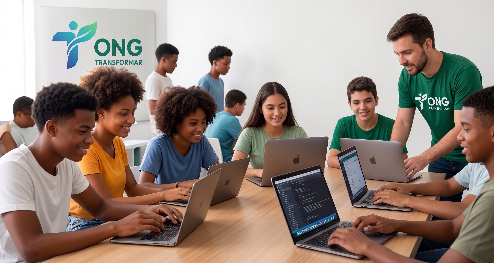

Em andamentoEducação para o Futuro
Aulas de reforço em exatas e programação para jovens de escolas públicas, com foco em inclusão digital e oportunidades no mercado de tecnologia.
Acompanhe o andamento das iniciativas da ONG Transformar com uma visão clara do impacto em educação e segurança alimentar.

Em andamentoAulas de reforço em exatas e programação para jovens de escolas públicas, com foco em inclusão digital e oportunidades no mercado de tecnologia.
Logística de arrecadação e distribuição de alimentos não perecíveis para famílias cadastradas em nossa base de apoio comunitário.